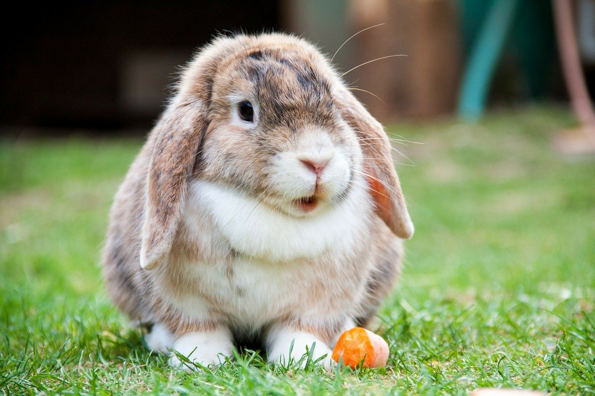
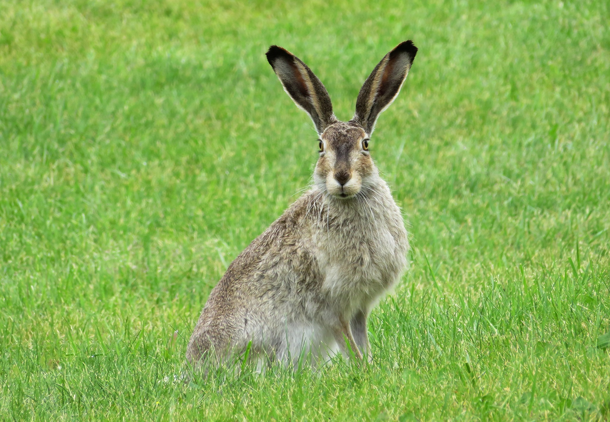

토끼
토끼는 포유동물에 속하며 야생형과 야생형을 길들여 키운 집토끼 등이 있다.
우리나라의 야생형은 멧토끼가 보편적인 종이며, 멧토끼를 길들인 집토끼와 애완용으로 개량한 품종들이 있다.
Characteristic
포유동물의 토끼목은 비교적 작은 크기를 가진다.
매우 짧거나 흔적적인 꼬리를 가지며 앞·뒷발은 다섯 발가락을 가진다.
위턱의 앞니는 큰 것 1쌍이 앞에 있고 그 바로 뒤에 매우 작은 것 1쌍이 있다.
앞니는 완전히 에나멜질로 싸여 있고 앞니와 앞어금니 사이에 넓은 틈이 있다.
Tale
오래전부터 전해오는 구전 등 우리나라의 민속문화에서 토끼는 꾀 많고 귀여운 동물로 인식되어져 왔다.
우리 주변에서 늘 흔히 볼 수 있는 동물이지만 달 속에서 방아를 찧는 상상의 대상인 토끼는
친숙한 동물이면서 신성스런 존재로 다가오게 만들었다.
[출처: 한국민족문화대백과사전(토끼)]
Gallery

- 


- 